Biology - X
Genetics of Life 7

Biology - X
Genetics of Life 7
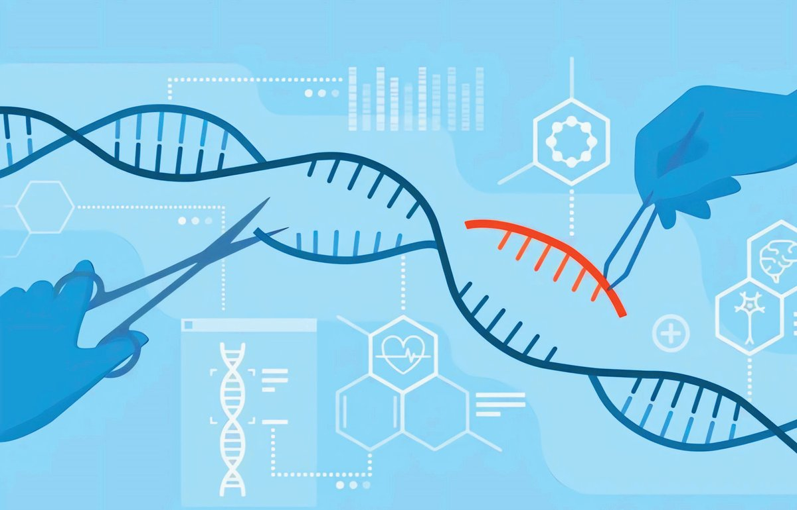
Biology - X
The Nobel Prize in Chemistry for developing methodology of Gene Editing The Nobel Prize of 2020 in Chemistry was shared by Emmanuelle Charpentier and Jennifer A Doudna for their contributions in the field of gene editing. The award is for the discovery of a technology called Emmanuelle Jennifer A CRISPR-Cas 9, a gene Charpentier Doudna editing process which can bring desirable changes in the genes in DNA. This discovery is expected to make revolutionary advances in genetic disease therapy and treatment of cancer. It can also be used to develop crops that are resistant to pests and diseases.
You have read the extract related to the technology which can bring revolutionary changes in the treatment of diseases and other fields. es! see gen n e v e e Can’t can it b w o h Then edited?
Didn’t you too have this doubt? A deeper understanding of DNA (Deoxyribonucleic acid) and genes paved the way for gene editing. 8

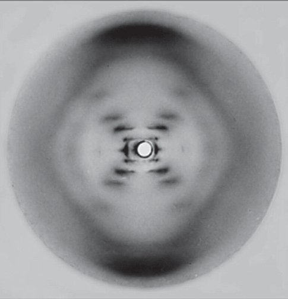
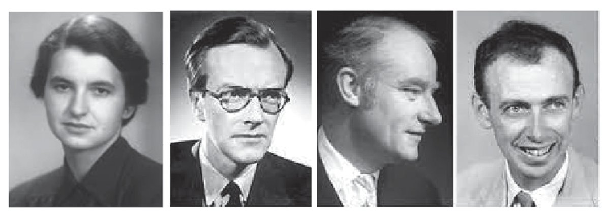
Biology - X
Let us understand the location and ultra structure of DNA and gene. Observe illustration 1.1 and make notes on the location of DNA.
Chromosome
Cell Illustration 1.1
Nucleus DNA
The Location of DNA
You have understood the location of DNA. Discovery of the structure of the nucleic acid DNA was one of the greatest leaps in the field of biological studies.
Structure of DNA In 1953, James Watson along with Francis Crick had presented the double helical model of DNA. They proposed the structure of DNA based on the X-ray diffraction studies conducted by Rosalind Franklin and Maurice Wilkins. The crucial information that led to this discovery was obtained from the famous 'Photo 51', an X-ray diffraction image of DNA taken by Rosalind Franklin. Rosalind Franklin passed away at the age of 37 in 1958. James Watson, Francis Crick and Maurice Wilkins were awarded the Nobel Prize in Medicine in 1962 for their contributions on the discovery of the double helix model of DNA.
Rosalind Franklin
1920-1958
Maurice Wilkins
1916-2004
Francis Crick
1916-2004
9
James Watson 1928
Photo 51
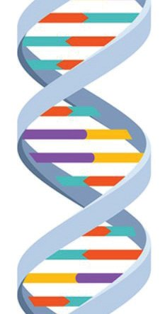
Biology - X
Analyse the illustration 1.2 to gain an understanding on the structure of DNA and complete the work sheet 1.1.
Composed of sugar and phosphate Strands Nitrogen bases
G A
C
A T G C
T
C
G
A
T
Adenine Thymine Guanine Cytosine
Sugar molecule Phosphate molecule
Rungs formed by the pairing of nitrogen bases Nucleotide
Double helix model of DNA
The basic building block of DNA Each nucleotide is composed of a deoxyribose sugar, a phosphate group, and a nitrogen base. Phosphate
Participates in the formation of bonds that link nucleotides together
Nitrogen base Nitrogen containing alkaline compound Deoxyribose 5 carbon sugar
Illustration 1.2
Structure of DNA
10


Biology - X
Worksheet 1. Number of strands in DNA 2. Molecules used to make strands 3. Molecules used to make rungs 4. Different types of nitrogen bases 5. Formation of rungs 6. Mode of nitrogen base pairing 7. Molecules in a nucleotide
Worksheet 1.1
The structure of DNA
Prepare the double helix model of DNA by using locally available waste materials and display it in class. Size of DNA The DNA in each chromosome is about 2 inches (5cm) long. If DNA from 46 chromosomes of a human cell joins together, it would be around 6 feet in length (2m). The human body is made up of trillions (one lakh crore) of cells. If the DNAs of all the cells joins together, it would be about 67 billion (one billion = 100 crore) miles in length. It is capable enough to wrap around the Earth over two million times!
a uch he s s doe t into t w o H A fi es N D om er larg hromos ls? l c y ce n i t of
Haven’t you listened to the child’s doubt? Analyse the illustration 1.3 and description based on the indicators and find the answer to the child’s doubt. 11
s normal How doe er from sugar diff olecule a sugar m in DNA? Find out.


Biology - X
Chromosome
DNA
Histone protein Histone octamer
Nucleosome
DNA and histone proteins are the primary components of a chromosome. Eight histone proteins join together to form a histone octamer. DNA strands wind around this octamer to form a structure called nucleosome. The chromosomes are formed by packing and coiling numerous nucleosomes and recoiling the chains of nucleosomes. Chromatids are the parts of a chromosome which are connected by means of centromere.
Indicators he What is t ip relationsh between chromatin and reticulum mes? chromoso Find out.
• Building blocks of chromosomes
Centromere
• Histone and nucleosome • Formation of chromosome
Chromatid
• Chromatid, centromere
Chromosome Illustration 1.3
The structure of chromosome
12
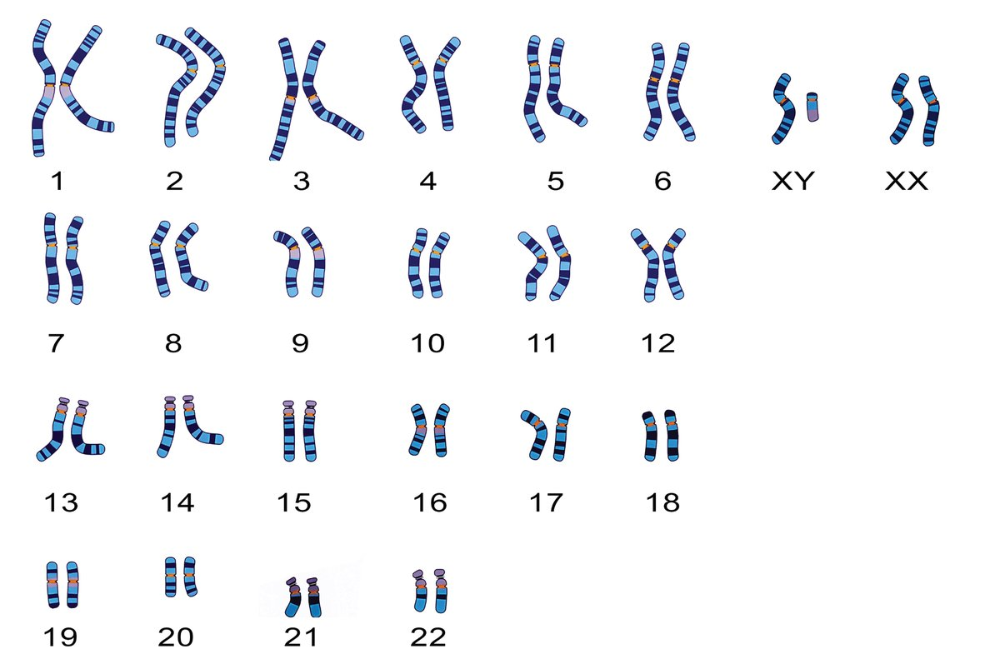

Biology - X
Each species possess a specific number of chromosomes. How many chromosomes do humans have? How do they appear? Analyse the illustration 1.4 based on the indicators, understand human chromosomes and prepare notes.
Human Chromosomes
Sex Chromosomes
Somatic chromosomes
These are the chromosomes which are involved in sex determination. They are of two types. X chromosome and Y chromosome. The Y chromosome is comparatively smaller than that of the X chromosome. The SRY gene on the Y chromosome is responsible for the development of testis in the embryo.
These are chromosomes that control physical characteristics. There are twenty two pairs of somatic chromosomes. A pair of identical chromosomes together form a homologous chromosome. One of these is inherited from the mother and the other from the father.
OR 23
Why are mes chromoso irs? seen in pa Find out.
Illustration 1.4
Human chromosomes
13


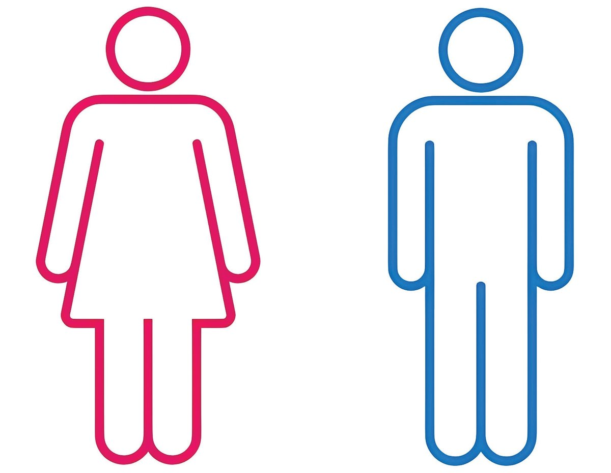
Biology - X
Indicators Are there multiple s with organism number the same osomes? of chrom Find out.
• Different types of chromosomes • Somatic chromosomes and their functions • Homologous chromosomes • Sex chromosomes and their function Prepare a table including the chromosome number of various organisms that are seen in your surroundings and display it in class. Pay attention to the given genetic constitution of a female and a male and complete table 1.1. Analyse the information in the table and draw inferences of chromosomal similarities and differences between a female and a male.
44 + XY
44 + XX
Genetic constitution
Total Number of chromosomes
Number of somatic chromosomes
Female Male Table
1.1
Human Chromosomes
14
Number and type of sex chromosomes

Biology - X
Different genetic constitutions Though, 44+XX and 44+XY are considered as normal genetic constitutions, many different kinds of genetic constitutions are seen in humans. These variant genetic constitutions influence the physical and mental development of the individuals. Gender determination is a complex process which not only depends upon genetic constitution, but also on other factors. Some examples for variant genetic constitutions: • 44+X0: Females with only one X chromosome. They have the condition called Turner syndrome. • 44+XXX: Females with three X chromosomes. They have triple-X syndrome. • 44+XXY: Males with two X chromosomes and one Y chromosome. They have Klinefelter syndrome. • 44+XYY: Males with one X chromosome and two Y chromosomes. They have XYY syndrome. Gender determination may become complex in individuals with these genetic constitutions mentioned above. For example, females with Turner syndrome may have female sex organs. However, they may not develop female sexual characteristics at the beginning of their adolescence. Males with Klinefelter syndrome may have male sex organs, but they may also exhibit female characteristics. You have understood that genes provide instructions as to how our body should function. Where are these genes found? How do they perform? Analyse illustration 1.5, their description and prepare notes out of it.
Gene Gene is a specific sequence of nucleotides in DNA. Proteins, which are synthesised according to the instructions of genes, are responsible for the formation of characteristic features and for controlling metabolic activities.
15
romoThe Y ch he some of t mportfather is i deterant in sex Why? mination. Find out.
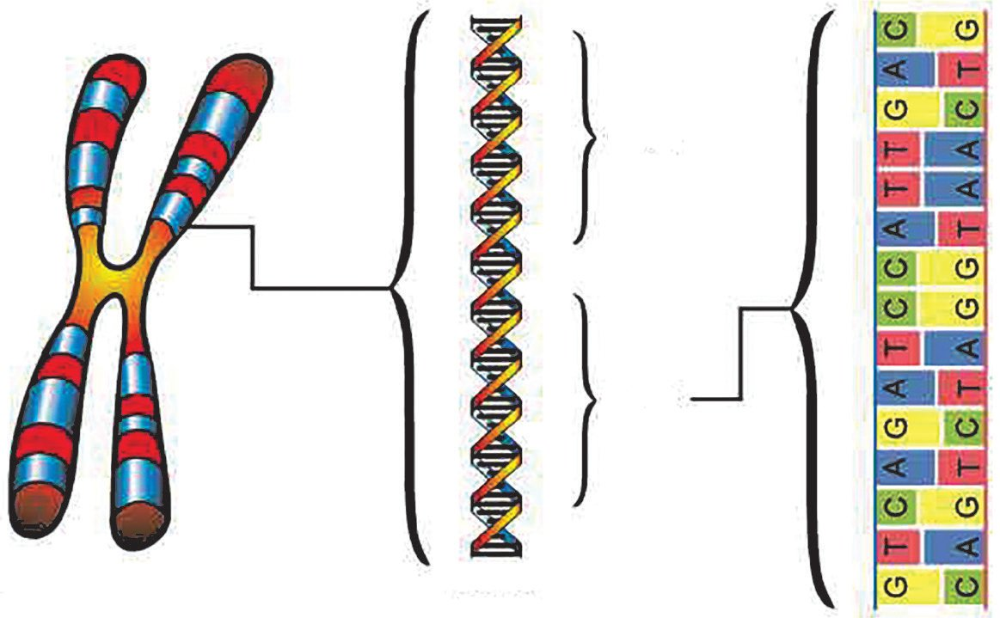


Biology - X
Gene 1
Gene 2
DNA
Chromosome Illustration 1.5
Genes
The nucleic acid RNA also plays a crucial role in the synthesis of proteins. Analyse illustration 1.6 and the description to understand the structure and characteristic features of RNA.
RNA (Ribonucleic acid)
Illustration 1.6
Structure of RNA
RNA is another type of nucleic acid, similar to DNA. They are also made up of nucleotides. Each of the nucleotide contains a ribose sugar, a phosphate group, and a nitrogenous base. The nitrogen bases in RNA are Adenine, Guanine, Uracil, and Cytosine. Most of the RNAs have a single strand.
Didn’t you understand the structure of RNA? Compare this with the structure of DNA and complete the table 1.2. Number of strands
Type of sugar molecule
Nitrogen bases
DNA RNA
Table
1.2
16
DNA, RNA Comparison

Biology - X
Protein Synthesis Have you understood that the proteins are synthesised as a result of the action of genes? Prepare a note on various stages of protein synthesis by analysing the illustration 1.7 and the description based on the indicators.
1. Transcription
Protein Amino acid
tRNA mRNA DNA
Ribosome
Nucleus
2. Translation
Illustration 1.7
Protein Synthesis
1. Transcription mRNA is formed from a specific nucleotide sequence (gene) in DNA with the help of various enzymes. The mRNA contains messages for protein synthesis. 2. Translation tRNAs (transfer RNA) carry specific amino acids to the ribosome based on message in the mRNA that has reached the ribosome from the nucleus. The rRNAs (ribosomal RNA), which are part of ribosomes combine amino acids to make protein.
17

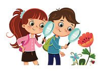
Biology - X
Indicators • Stages of Protein Synthesis • Processes take place in the nucleus • Processes take place in the cytoplasm Prepare a flow chart that shows the various stages of protein synthesis and display it in the classroom. Various RNAs involved in protein synthesis are given in the illustration 1.8. Complete it by including their name and function. rRNA (Ribosomal RNA)
The primary component of the ribosome helps in the formation of bonds between amino acids.
Illustration 1.8
Different types of RNAs
To understand how proteins, which are synthesised according to the direction of genes, influence the characteristic features of organisms, observe the pictures given and find out the similarities and differences between parents and offsprings.
18

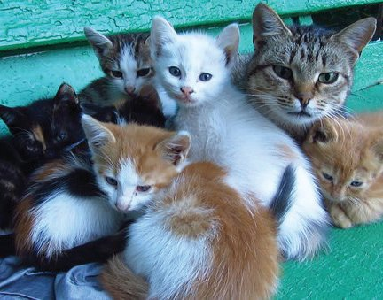

Biology - X
Similarities and Differences in Characters Some characteristics of parents are also found in their children. Isn’t it also common to see certain characters in children which differ from their parents? Heredity refers to the transmission of characteristics from parents to their offspring. Variations are characters expressed in offspring, that differ from their parents. Genes inherited from parents are responsible for both heredity and variations. The historical path that led science to the discovery of genes is pivotal. Analyse the given description to get a deeper understanding. 19
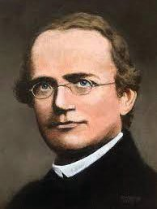
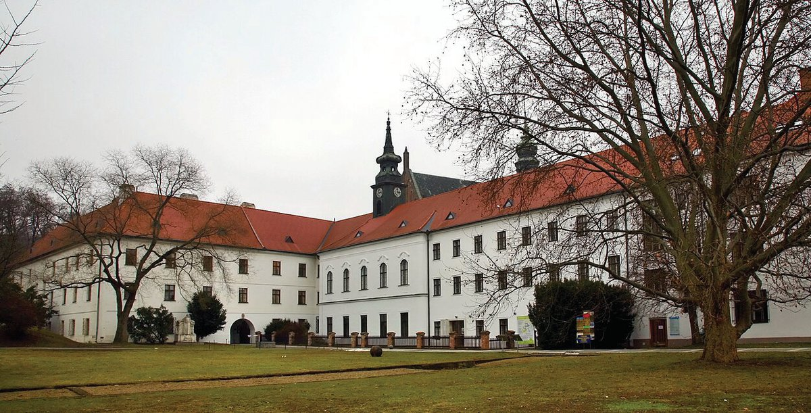
Biology - X
Mendel Museum of Masaryk University in Brno
Genetics in the Garden
Gregor Johann Mendel 1822-1884
Genetics is the branch of science that deals with genes, heredity, and variation. Gregor Johann Mendel’s experiments on pea plants (Pisum sativum) and the conclusions he drew out of hybridisation experiments laid the foundation for the field of genetics. Therefore, he is considered as the father of genetics.
Know the scientists Gregor Johann Mendel Gregor Johann Mendel was born on 20 July, 1822, at Hyncice a small village of Northern Moravia, which is now known as Czech Republic. After joining the Augustinian monastery at Brno, he became a priest in 1847. Between 1851 and 1853, he attended the University of Vienna where he studied Physics, Mathematics, and Natural sciences, and learned statistical methods to analyse data scientifically.
20
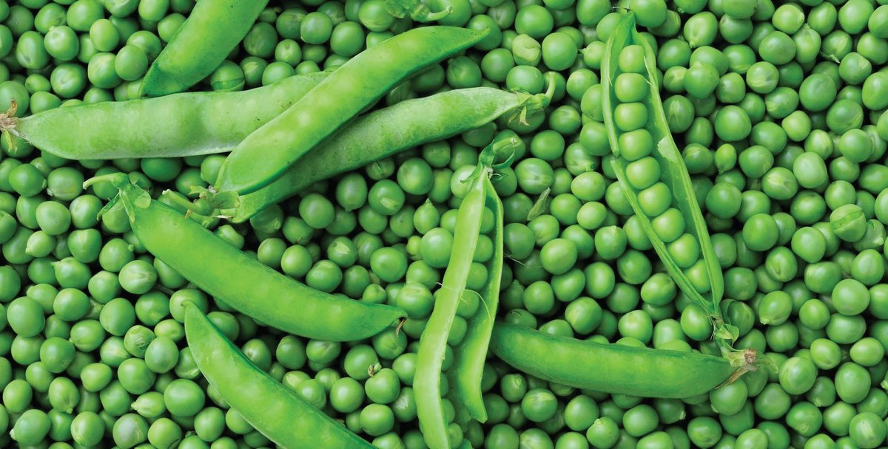
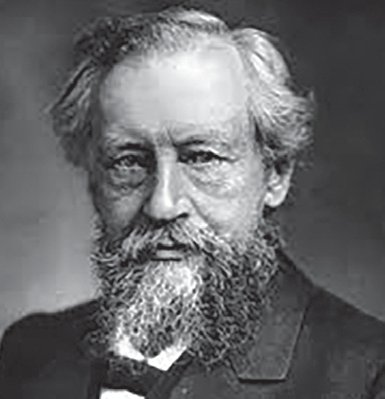
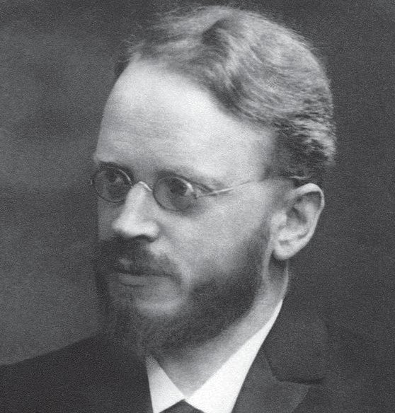

Biology - X
In 1856, Mendel began to conduct hybridisation experiments on pea plants (Pisum sativum) in the garden of his monastery that focused on seven specific characters such as the colour of flower, shape of the seed etc. Based on the analysis of the experimental result, he explained that a pair of factors controls each character and represented those factors using symbols. These factors are now known to be genes. Gregor Mendel's conclusions are known as the Laws of Inheritance. These laws provide the fundamental genetic framework to understand heredity and variation.
Hugo de Vries
In 1865, he presented his findings in the Natural History Society at Brno. The following year, he published a thesis titled 'Experiments on Plant Hybridisation.' However, the scientific community of that time largely ignored Mendel's discoveries. Gregor Mendel passed away in 1884. In 1900, sixteen years after his death, botanists Hugo de Vries, Carl Correns, and Erich von Tschermak recognised the significance of Mendel's research. With this, Mendel's findings were accepted as the foundation of the science of genetics. Genetics has grown into the most extensive branch of science through numerous contributions of various scientists. 21
Carl Correns
Erich Von Tschermak
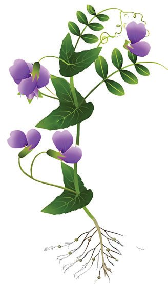


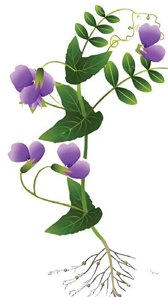
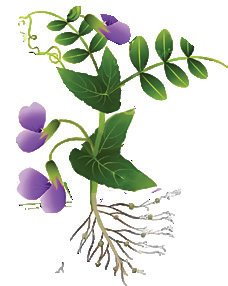
Biology - X
Mendel’s Experiments Mendel initially conducted hybridisation experiments by considering a single pair of contrasting traits. This is known as a monohybrid cross. The hybridisation experiment conducted considering the trait of the height is depicted in the illustration 1.9. Analyse it based on the indicators, and form inferences.
Parental plants
X Dwarf
Tall
He hypothesised that there must be certain factors within the seed that control traits. To find out what might have happened to the factor responsible for dwarfness, he selfpollinated the plants obtained in the first generation to produce a second generation of plants.
First generation (F1)
Second generation (F2) 1064 plants
Tall
277 Dwarf
787 Tall
The ratio between the traits is approximately 3:1 Illustration 1.9
Monohybrid Cross
22

Biology - X
Indicators • The characters considered and their traits • Dominant and recessive traits in the first generation • Importance of self-pollination • Traits in the second generation While conducting hybridisation experiments based on the contrasting traits of six other characteristics in pea plants, Mendel obtained results similar to the first experiment. Factors Gregor Mendel hypothesised that characters from parents are passed on to offsprings through certain factors that are transmitted through gametes. It was only after Mendel’s period that, these factors were discovered to be genes that are located in chromosomes in the nucleus. A gene that determines a character can have different forms. These different forms of genes are called alleles. A gene usually has two alleles. The hybridisation experiment shown in illustration 1.9, the different alleles that determine the character of height are represented by T and t. The allele T represents tall and the allele t represents dwarf. The observable characteristics of an organism are called phenotype, and the genetic constitution responsible for these characteristics are called genotype. Observe the illustration 1.10 of the hybridisation experiment where the factors controlling the traits are represented using symbols. Complete the illustration, discuss and prepare notes based on the indicators.
23
nt Is domina character always a e? phenotyp Find out.
Biology - X
Parental plants Tall
X
Dwarf
T
Gametes
t
TT
tt
Tt
F1
Tall Self pollination of the first generation
Tt T
Tall
Gametes
t
F2 ................
Tt
X
Tt .......
......
......
................ ................
tt .......
Illustration 1.10 Monohybrid cross
Indicators • Phenotype and genotype of the parental plants • Phenotype and genotype of first generation plants • Genotype of the tall parental plant and the first generation plant • Ratio of the traits in the second generation 24
Biology - X
The following are the inferences drawn by Gregor Mendel from monohybrid cross. Analyse them and answer the questions given below. Mendel’s Postulates • A trait is controlled by two factors. • When a pair of contrasting traits is subjected to hybridisation, only one of the contrasting traits is expressed in the offspring of the first generation and the other remains hidden. The trait that appears in the first generation is called dominant trait and the hidden trait is called recessive trait. The trait hidden in the first generation reappears in the second generation. • When gametes are formed, the factors that determine trait gets separated without mixing. • The ratio of dominant to recessive traits in the offspring of the second generation is 3:1.
?
Why was a plant with intermediate height not formed by the combination of tall and dwarf?
?
Hasn’t the character that is not expressed in the first generation appeared in the second generation? How would that be?
In the next stage, he observed the inheritance of two pairs of contrasting traits of the same plant. This is known as dihybrid cross. Analyse the illustration 1.11 of hybridisation experiment conducted by considering height of the plant and shape of the seed based on the given indicators, and note down your inferences.
25
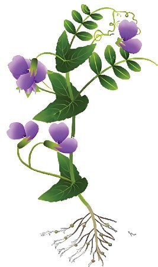


Biology - X
Parental plants
Tall and round seeded
X
TTRR
ttrr
TR
Dwarf and wrinkled seeded
tr Gametes
F1
TtRr .................................................. TtRr X TtRr tr Tr tR
Self pollination of the first generation Gametes
TR F2 Tr tR tr
TR TTRR Tall and round seeded
Illustration 1.11 Dihybrid cross
Indicators • • • • • •
Characters considered and their contrasting traits Phenotype and genotype of the parental plants Dominant and recessive traits of the first generation Alleles of the gametes produced by the first generation Phenotype of the plants in the second generation Phenotypes observed in the second generation that differed in contrast to the parental plants and their genotypes
• Phenotypic ratio of the second generation 26

Biology - X
The inference that Mendel drew from this experiment is given below. Analyse it and find out the answer to the given question. Mendel’s Postulates: When two or more different traits are combined, each trait is inherited independently to the next generation without mixing each other. (A pair of alleles in an organism does not influence the separation of another pair of alleles.)
?
Characters that are not found in the parent plants are found in the second generation. Why?
Didn’t characters often exhibit more than two traits? What could be the reason for this?
Don’t you notice the child’s doubt when she observed the flowers? What is your opinion? Mendel's laws were the foundation of genetics. However, it could not fully explain the diversity of traits observed in organisms. Later studies about the complex interaction among genes, environment and other factors revealed some of the limitations of Mendel's laws. This gave rise to the concept of Non-Mendelian Inheritance. 27
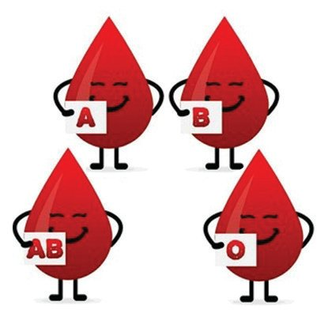


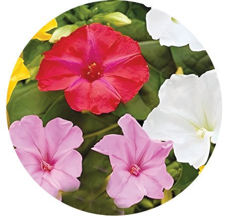
Biology - X
Analyse various situations given below and find out how they differ from Mendel’s hypothesis and then answer the child’s doubt.
Non Mendelian Inheritance If a red flowered four o'clock plant is hybridised with a white flowered plant, the resulting offspring will have pink flowers. A dominant allele cannot fully hide the allele of the recessive trait. Incomplete Dominance Roan coat pattern, found on some cattle and horses
Both alleles exhibit their traits at the same time. Co-dominance ABO blood group in humans The gene that determines blood group in human beings has more than two alleles. Three alleles IA, IB and i determine the blood group. Multiple allelism Difference in skin colour More than one gene controls the colour of the skin. The action of these genes cause variation in the production of melanin that causes difference in skin colour. Polygenic inheritance
Table
Peculiarity
Reason
1.3
Non Mendelian Inheritance
28
Name of the inheritance

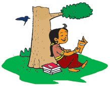
Biology - X
Explore more situations and examples of Non Mendelian Inheritances and present in the class.
Behind the colour difference Melanin is the primary pigment that gives colour to skin. The amount and type of melanin determine the colour of the skin. The geographical region from where an individual’s ancestors emerged is a major factor that influences skin colour. As the intensity of sunlight varies in different geographical regions, genetic variations suitable for the skin colour of each region have occurred. Environmental factors such as sunlight, diet, and vitamin D also influence skin colour. The human race is genetically diverse, and skin colour is only one aspect of this diversity.
ring have How do offsp t their characters tha have? parents don’t
Haven’t you noticed the child’s doubt? The characteristics the offspring receives from parents may not always be the same. The chief genetic processes which are responsible for this diversity among individuals are given below. Analyse them and find out the answer to the child’s doubt. 29
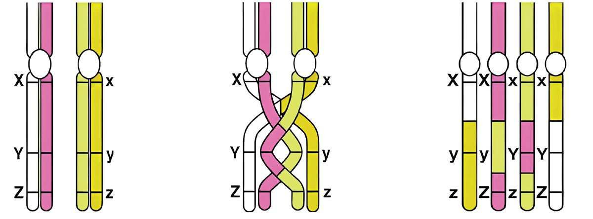
Biology - X
Genetic processes responsible for variations Crossing over Meiosis is the type of cell division that is responsible for the formation of gametes. Analyse the illustration 1.12 to gain an understanding about the process of crossing over, which occurs during the first phase of meiosis.
chiasma
Pairing of homologous chromosomes (Identical chromosomes inherited from the parents of an organism)
The point of contact of the paired chromosomes is called chiasma. The chromatids break at this region and the broken segments are exchanged with each other.
This exchange causes a recombination of alleles. This leads to the appearance of new traits in the offspring.
Illustration 1.12 Crossing over
Indicators • Phase in which crossing over occurs • Process of crossing over • Role of crossing over in the formation of variations 30

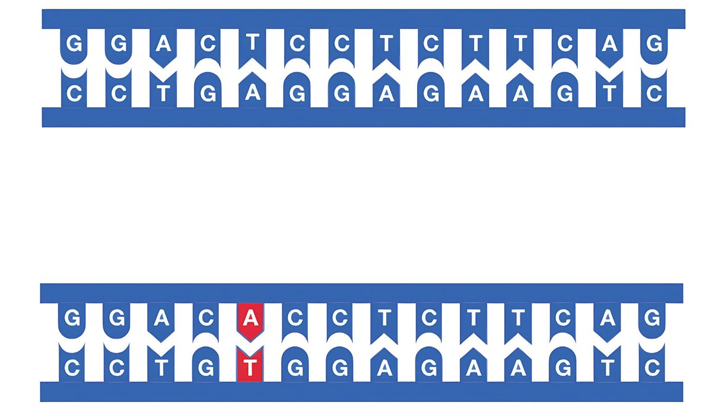
Biology - X
Mutation Mutation is the sudden heritable change in the genetic constitution of an organism.
Illustration 1.13 Mutation
Mutations can be caused by errors during DNA replication, exposure to certain chemicals, radiations, etc. Mutation causes changes in genes. These genes are transferred through generations which leads to variations in characters. Mutations play a crucial role in the process of evolution.
Indicators • Mutation • Reasons for mutation • Importance of mutation Haven’t you understood that recombination of alleles during fertilisation, crossing over, mutation, etc. causes variations in organisms? Collect more information on the processes that cause variations and prepare a slide presentation.
31
Biology - X
Genetics- Career Opportunities Genetics is a broad field with various branches, that includes molecular genetics, population genetics, medical genetics, cytogenetics, behavioural genetics, and genomics. Graduate programmes in genetics and related fields such as biotechnology, microbiology, bioinformatics etc. open doors to a wide range of career opportunities. At the postgraduate level specialised studies in genetic counselling, genomics, medical genetics, and forensic science provide opportunities in healthcare, research, and education. Advanced degrees such as a Ph.D in Genetics equip students for careers in cutting-edge research, pharmaceuticals, agriculture, and other industries. The world of genetics is so vast that it offers endless opportunities for new discoveries and research. For those who are curious about the mysteries of life, genetics is a scientific field that offers more possibilities to explore more domains. Genetics is the branch of science that unravels the mysteries of life. Genetics provides an understanding about how genes function and how they get transmitted from one generation to the next. Advances in this field have led to significant developments in genetic engineering. We have covered certain steps that lead to the answer to the child’s doubt regarding gene editing. We will be able to get a complete answer as we go through the upcoming chapters. Discoveries in genetics help us to understand and explain how evolution takes place. The combination of various genetic processes determines the characteristics of an organism. These processes are fundamental to the diversity and evolution of life. We will understand how it is, in the next chapter.
32
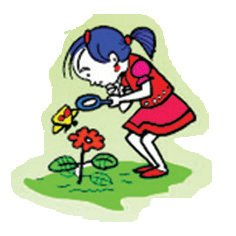
Biology - X
Let us Assess 1.
Are basic building blocks of DNA and RNA the same? Explain.
2.
Analyse the statements and choose the appropriate one. i.
F1 has similarity with both the parents.
ii
F1has no similarity with any of the parents’ character intermediate to them.
iii F1 has similarity with one of the parents a)
i - Dominance, ii - Incomplete dominance, iii - Co-dominance
b)
i - Incomplete dominance, ii - Dominance, iii - Co-dominance
c)
i - Co-dominance, ii - Incomplete dominance, iii - Dominance
d) i - Dominance, ii - Co-dominance, iii - Incomplete dominance 3.
Which of the following is contributed by organisms that reproduce sexually, to their offspring? a)
All genes
b)
Half of their genes
c)
One fourth of their genes
d) Double the number of genes 4.
A tall pea plant with purple flowers (dominant character) is crossed with a dwarf plant with white flowers. a)
Illustrate the dihybrid cross of these and write the F2 ratio.
b)
Did characters that differ from the parents appear in the F2 generation? Why?
c)
If both the genes are not assorting independently, how does it affect the F2 ratio?
5.
How does dominance, co-dominance and incomplete dominance differ from one another?
6.
Different phenotypic ratios are obtained in monohybrid and dihybrid cross. Why? What does it indicate about the inheritance of characters?
7.
Even though a gene responsible for certain characters has more than two alleles, why does that particular gene have only two alleles in an individual ? 33

Biology - X
8.
Although the DNA possesses all genetic information for protein synthesis, RNA is also required for protein synthesis. Why?
9.
How do co-dominance and multiple allelism function in the determination of blood group in the ABO blood grouping in human beings? Explain.
10. All ova formed in females contain one type of sex determining chromosome. Why?
Extended activities 1.
Present the process of transcription and translation in the class, using coloured beads or paper strips to indicate nucleotides.
2.
Prepare and present a time-line animation in class that depicts the steps in the development of genetics.
3.
Conduct Mendel’s hybridisation experiment on pea plants using dices or beads to represent alleles.
4.
Collect data and draw conclusion on how sex determination in various species takes place and the influence of environmental factors on it.
5.
Discuss the scientific, social and cultural dimensions of skin colour variation.
34